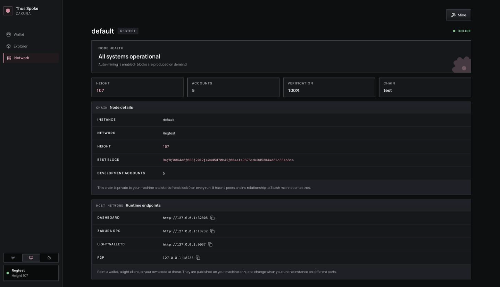

7. Connect your application
By now you have seen one payment from the dashboard down to Zakura and back to the wallet snapshot. An integration needs to choose the owner of the data it wants, then connect to that owner’s local interface.
- Use the dashboard HTTP API when your program needs user accounts, reconciled balances, activity, or the server’s wallet sync status.
- Use Zakura JSON-RPC for the node tip, blocks, raw transactions, and mempool state. Those facts do not tell you which Orchard notes your development wallet can spend.
- Use lightwalletd gRPC when building a compatible light client that scans compact blocks itself. The local service uses plaintext transport.
- Use
ths endpoints --jsonto discover host ports. All published addresses are on127.0.0.1; the instance’s Docker-internal names are a different network.
Discover the current instance
Keep ths running in one terminal. In another:
ths endpoints --json
For a named instance, use ths --name alice endpoints --json:
{
"dashboard": "http://127.0.0.1:32805",
"rpc": "http://127.0.0.1:18232",
"lightwalletd": "http://127.0.0.1:9067",
"p2p": "127.0.0.1:18233",
"network": "regtest",
"tls": false
}
The dashboard Network page shows the same addresses, while
GET /api/v1/status calls the RPC field zakura_rpc. That naming
difference is a property of the two current responses, not two different
nodes.

| Endpoint field | Example use |
|---|---|
dashboard | Base URL for /api/v1/status, /api/v1/accounts, /api/v1/activity, and the UI. |
rpc | Zakura JSON-RPC, such as getblockchaininfo. |
lightwalletd | Compact-block gRPC client connection. |
p2p | Local Zakura peer connection address. |
network | The chain, always "regtest". Assert on it before writing anything. |
tls | Always false. Configure transports as plaintext. |
The four ports are fixed defaults — dashboard 32805, Zakura RPC 18232,
P2P 18233, lightwalletd 9067 — shifted as a block by whatever
--port-offset that instance was started with. So they are stable across
runs of one instance, but they are not a constant of the system: read
ths endpoints --json rather than hard-code them, because you cannot know
another developer’s offset.
Build a small read client
Save the following as read_tsz.py and run python3 read_tsz.py while the
default instance is alive. It uses only Python’s standard library:
import json
import subprocess
import urllib.request
endpoints = json.loads(
subprocess.check_output(["ths", "endpoints", "--json"], text=True)
)
dashboard = endpoints["dashboard"]
def get_json(path):
with urllib.request.urlopen(dashboard + path, timeout=10) as response:
return json.load(response)
status = get_json("/api/v1/status")
if status["wallet_sync"]["state"] != "ready":
raise SystemExit("Wallet is not ready; inspect /api/v1/status before using balances")
if status["node"] is None:
raise SystemExit("Zakura did not answer the status query")
print("Node height:", status["node"]["blocks"])
print("Node tip:", status["node"]["bestblockhash"])
for account in get_json("/api/v1/accounts"):
print(
f'Account {account["id"]}: '
f'{account["orchard_zatoshi"]} Orchard zatoshi, '
f'{account["transparent_zatoshi"]} transparent zatoshi'
)
For a named instance, insert "--name", "alice" before "endpoints"
in the subprocess argument list. If Zakura does not answer the status query,
check the Network page and logs. In a healthy ready instance, the example
prints only user Accounts 1–5. 100000000 zatoshi is 1 ZEC.
GET /api/v1/accounts carries more than balances. Each account object also
has name, unified_address, transparent_address, and
unified_full_viewing_key. The addresses are what you pay from outside the
dashboard; the viewing key is the only way to read an Orchard memo this
environment sent, since nothing in the API or UI shows one back. Because the
seed is fixed (see Chapter 3),
these values are identical in every instance — convenient for fixtures, and
a reason never to reuse them anywhere real.
The explicit ready check matters. GET /api/v1/accounts returns the
last wallet snapshot even while a new scan is in progress or has failed.
Use wallet_sync.observed_height, observed_hash,
fully_scanned_height, and fully_scanned_hash if your application
needs to explain why the node and wallet differ. A same-height
reorganization can change a hash without changing a height.
Listen for changes, then fetch state
GET /api/v1/events is a server-sent event stream. Each update event
contains one topic: wallet, chain, or sync. The event is a hint
to refetch, not a balance or block payload. The dashboard’s query hooks
invalidate the relevant queries when one arrives. A simple terminal view
is:
DASHBOARD_URL="$(ths endpoints --json | python3 -c 'import json,sys; print(json.load(sys.stdin)["dashboard"])')"
curl -N "$DASHBOARD_URL/api/v1/events"
Leave it running, perform a faucet or mine in another terminal, and watch
for update events. Press Ctrl+C to stop the stream. Your client should
read the relevant HTTP endpoint after an event; it should also fetch
initial state when it connects, since a stream starts with no full
snapshot.
Read chain state directly
This read-only JSON-RPC call asks Zakura for its chain view:
import json
import subprocess
import urllib.request
rpc = json.loads(
subprocess.check_output(["ths", "endpoints", "--json"], text=True)
)["rpc"]
body = json.dumps(
{"jsonrpc": "2.0", "id": 1, "method": "getblockchaininfo", "params": []}
).encode()
request = urllib.request.Request(
rpc, data=body, headers={"Content-Type": "application/json"}
)
with urllib.request.urlopen(request, timeout=10) as response:
print(json.load(response)["result"])
Save this as chain_info.py and run python3 chain_info.py. The result
describes the node. Use the accounts API for the development wallet’s
balances and the activity API for recorded requests. Do not try to infer
private Orchard recipients or memo plaintext from raw chain data.
Connect a light client
Pass the lightwalletd endpoint to a lightwalletd-compatible gRPC client
configured for plaintext. You do not have to take that on trust: the
same ths endpoints --json that gave you the address reports "tls": false
alongside it. Some clients expect host:port rather than an http:// URL;
use the form your client library requires.
The rest of the API surface
These are every route the server serves today, from
crates/tsz-server/src/api.rs:
| Route | Notes |
|---|---|
GET /api/v1/health | 200 when Zakura answers and the wallet has published at least one snapshot; 503 otherwise. The natural readiness probe. |
GET /api/v1/status | Node tip, account count, network, endpoints, wallet_sync. |
GET /api/v1/accounts | Accounts 1–5 with balances, addresses, and viewing keys. |
GET /api/v1/activity | Recorded development payments; see Chapter 6 for the object’s eleven fields. |
POST /api/v1/send/quote | Dry run: available_zatoshi, fee_zatoshi, max_zatoshi for one account and pool pair. Builds and broadcasts nothing. Check an intended amount against max_zatoshi before calling send. |
POST /api/v1/send | Payment between accounts. Needs an idempotency key. |
POST /api/v1/faucet | Treasury payment to an account. Needs an idempotency key. |
POST /api/v1/faucet/address | Treasury payment to any Regtest address. No key, no activity record. |
POST /api/v1/mine | Generate 1–10,000 blocks. No retry key. |
POST /api/v1/dev/seed | Returns the raw seed hex. Refuses unless the body carries "confirmation": "I understand this seed is for regtest only". |
GET /api/v1/blocks, /blocks/{id}, /transactions/{txid}, /mempool, /addresses/{address}, /search | Read-only explorer views of public chain data. |
GET /api/v1/events | The server-sent stream described above. |
Chapter 6 explains the retry boundaries around the four write routes. These interfaces are for local Regtest experiments; keep them on loopback and verify the current source before building a long-lived integration.
What you learned: choose an endpoint by state ownership, then check wallet readiness before using a balance. Next: use the CLI reference, source development guide, or troubleshooting guide as your experiment needs.